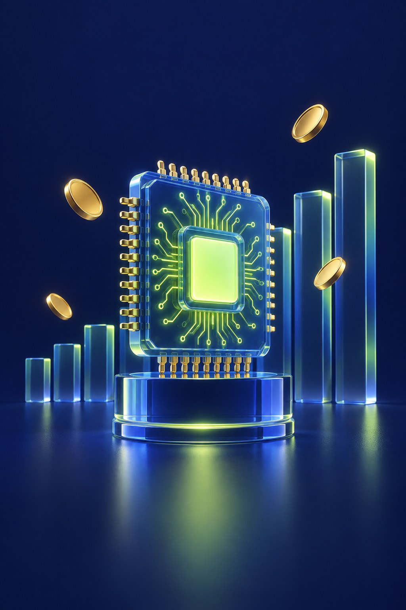
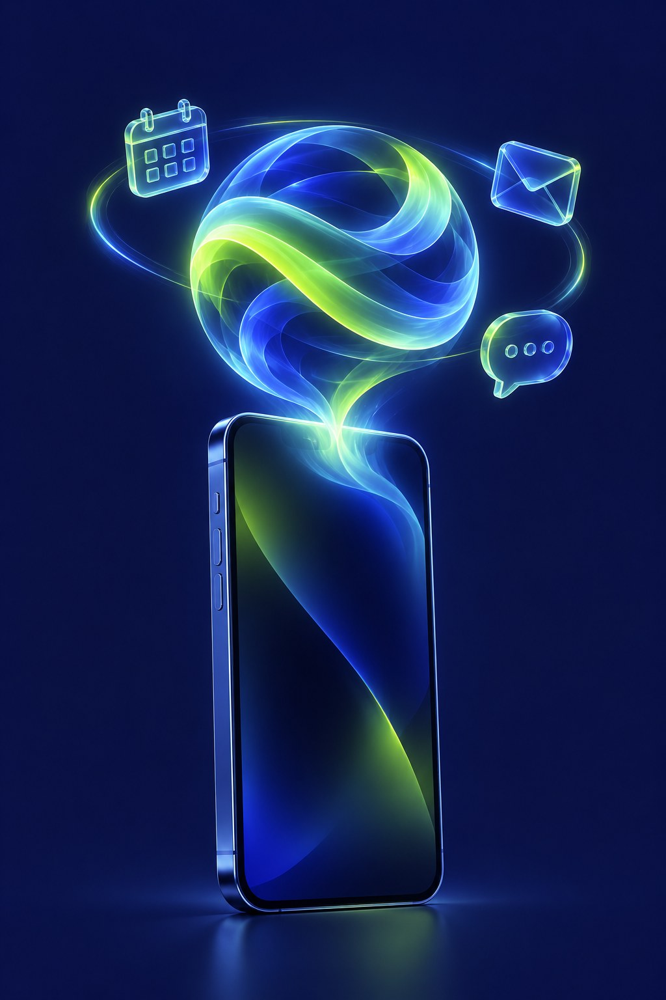
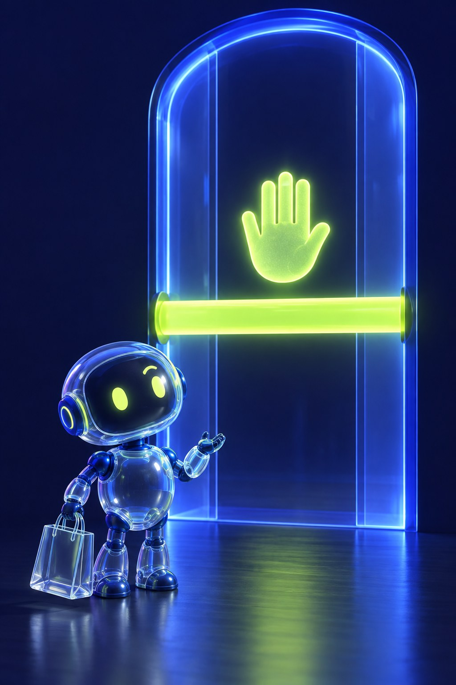

Bir çip devi 1 trilyon dolar kulübüne girdi, Siri sonunda "akıllandı", iki dev alışveriş ajanları yüzünden kapıştı.
Kaydır ↘
Hisse 5 günlük yükselişin sonunda pazartesi rekor kırdı; yapay zekâ çiplerine talep tüm sektörü sürükledi. Nasdaq, haziran ayından beri ilk kez rekor kapanış yaptı.


Muse senin yerine alışveriş yapan bir yapay zekâ ajanı; aynı hafta App Store'da 1 numaraya çıktı. Amazon "izinsiz ajan, kullanım koşullarına aykırı" dedi. Daha önce Perplexity'nin ajanlarını da engellemişti.
Asıl soru: Alışverişi senin yerine bir ajan yaparken mağaza kimin? Sence kim haklı? Yorumda tartışalım ↓ · Haftaya lazım olur, kaydet.